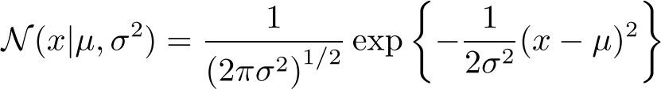
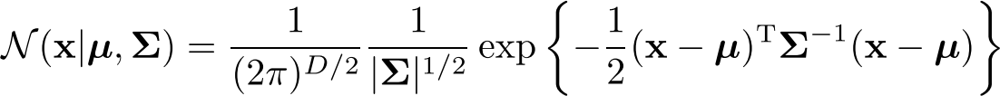
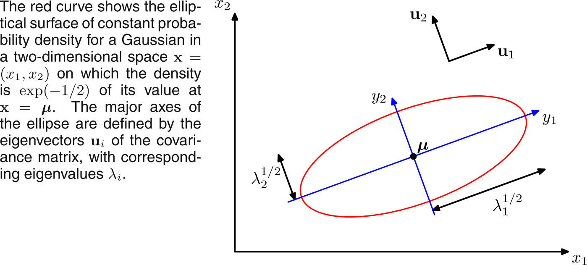
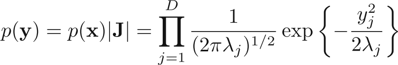
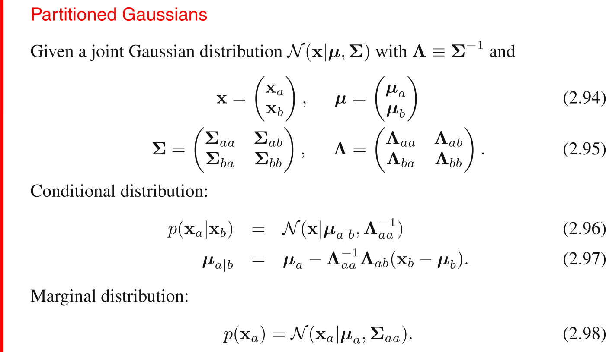
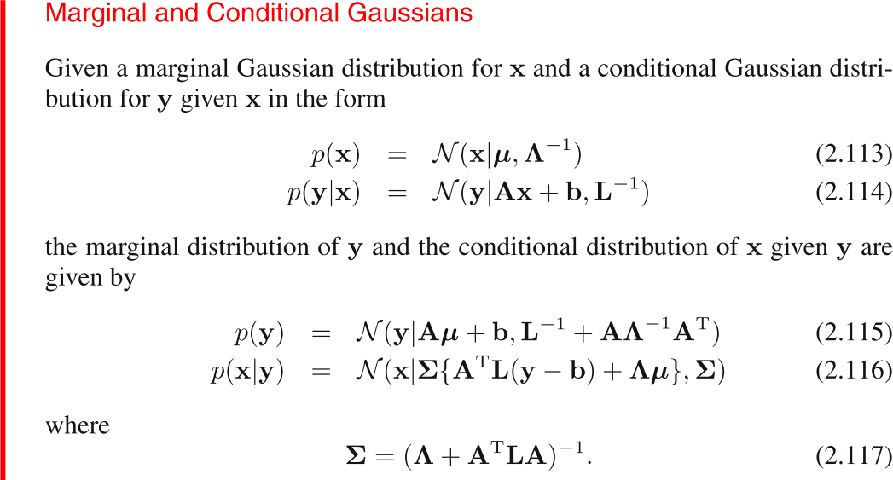

Normal/Gaussian distribution
Univariate Gaussian distribution:

Multivariate (D-dimensional vector x) have:

Some more properties/observation of Gaussian:
- The functional dependence of the Gaussian on x is through the quadratic form:
$\Delta^2$ = (x-$\mu$)$^T$ $\Sigma^{-1}$ (x-$\mu$).
- Matrix $\Sigma$ can be considered to be symmetric as anti-symmetric part of it won't constitute anything to $\Delta$. (It's value would be zero).
- We can write $\Sigma$ in terms of it's eigenvalues ($\lambda_i$) and orthonormal eigenvectors (u$_i$) as:
$\Sigma$ = $\Sigma_{i=1}^D$ $\lambda_i$u$_i$u$_i^T$, and
$\Sigma^{-1}$ = $\Sigma_{i=1}^D$ $\frac{1}{\lambda_i}$u$_i$u$_i^T$
- We can shift and rotate x to get: y$_i$ = u$_i^T$ (x - $\mu$)
Then we have: $\Delta^2$ = $\Sigma_{i=1}^D$ $\frac{y_i^2}{\lambda_i}$
Or: y = U (x - $\mu$)
- This would give (Bishop Fig 2.7):

Here if we would plot the same curve in new coordinate system of y, we should get a circle (well, if we also account for $\lambda$s) with center at origin.
- Also by putting the value of $\Sigma$ and $\Delta$, in the multivariate equation of Gaussian, and rearranging stuff, we would get the equation of Gaussian in new co-ordinate system as:

which is, as we can see product if D independent univariate Gaussian distribution.
Marginal and conditional distributions of a partitioned Gaussian
taken from Bishop, eq 2.94 to 2.98

Marginal and conditional Gaussian
taken from Bishop, eq 2.113 to 2.117

MLE for multivariate Gaussian
Given data point x$_1$ to x$_n$, we can get:
$\mu_{ML}$ = $\frac{1}{N}\Sigma_{n=1}^N$ x$_n$
$\Sigma_{ML}$ = $\frac{1}{N}\Sigma_{n=1}^N$ (x$_n$ - $\mu_{ML}$)(x$_n$ - $\mu_{ML}$)$^T$
For variance result, instead of averaging over N we can avergae over N-1 to get an unbiased variance estimator.